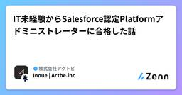

株式会社アクトビのフィード
https://zenn.dev/p/actbe_tech
Purpose Driven Tech-Integrator - 目的駆動型のテクノロジー専門家集団 - 私たちはデジタルの専門家として『何のために開発するのか』という問いに立ち返り、技術の可能性から最適な課題解決を行い、確かな技術力で価値を創造し続けます。
フィード

IT未経験からSalesforce認定Platformアドミニストレーターに合格した話
株式会社アクトビのフィード
はじめにこんにちは！今回は、IT未経験で入社して、Salesforce認定Platformアドミニストレーター試験に合格した話をしようと思います。正直、入社した頃は「Salesforceって何?」というレベルからのスタートでした。そんな僕でも何とか合格できたので、これから同じように未経験でSalesforce業界に飛び込む方や、資格に挑戦しようとしている方の背中を少しでも押せたらいいなと思って、当時の勉強法や心境を振り返ってみることにしました。「 未経験でも意外といけるかも ! 」って思ってもらえたら嬉しいです。 Salesforce認定Platformアドミニストレー...
1日前

既存のSalesforce環境で迷子にならない！Claude Code×メタデータで始める高速キャッチアップ
株式会社アクトビのフィード
はじめにSalesforceの標準側でも開発側でも、すでにカスタマイズされ尽くした環境に新しく入り、「この機能を修正してください」と言われたとき。「最初にどこを見ればいいのか全くわからない…」という絶望感を経験したことのあるエンジニアは少なくないと思います。最終的な目標はもちろん環境の完全な理解ですが、それには膨大な時間と調査が必要です。しかし、現場では「今すぐこの一部を修正してほしい」というスピードが求められます。そんなとき、どうすればいいでしょうか？AI時代において、素早く検索し、目的のコードや設定に辿り着く方法があります。これを使えば、迷っている時間を減らし、良い設計や実...
8日前
ラズパイで自動復旧・ロールバックを実装する
株式会社アクトビのフィード
目次はじめに前提: 基本のunit fileはこれくらい再起動ループを止める StartLimitBurstとStartLimitIntervalSecOnFailure=で失敗をフックして別unitを起動するリカバリスクリプト側で気をつけたことまとめ参考 はじめにみなさんRaspberry Piはご存知ですか。Raspberry Pi（ラズベリー パイ）は、ARMプロセッサを搭載したシングルボードコンピュータ。イギリスのRaspberry Pi 財団（非営利組織）とRaspberry Pi Ltd.（営利組織）によって開発されている。日本語では略称として...
14日前
【2026年最新版】Salesforce データローダーのインストール手順（Windows / Mac 対応）
株式会社アクトビのフィード
はじめにこんにちは！株式会社アクトビの寺井です。Salesforce でデータを大量に登録・更新・削除したいとき、真っ先に候補に上がるのが データローダー（Data Loader） です。ただ、いざインストールしようとすると…「あれ、Java が必要なの？」「ファイルが複数あってどれを実行するの？」「警告が出て進めない…」こういった壁にぶつかることが意外と多いです。実際、弊社のお客様からもよくご質問をいただきます。本記事では、2026年6月時点の最新バージョン（v67 / Summer '26） をベースに、Windows と Mac それぞれのインストール手順...
21日前
AI時代、コーディングは2倍速くなったのになぜバグが増えるのか？
株式会社アクトビのフィード
AI時代に求められるのは「コーディング力」ではなく「仕様理解力」最近、CursorやClaude Codeなしでのコーディングが想像できないほど、AIは開発の日常に深く浸透しています。実際に生産性が目に見えて向上したという話は、いたるところで耳にします。しかし不思議なことに、コードが速く書けるようになった一方で、思いもよらないバグに遭遇したり、システムの整合性が崩れたりする頻度も増えたように感じられます。これは単なる気のせいでしょうか？グローバルコード分析機関であるGitClearの研究結果によると、AI導入後にコーディング速度は爆発的に増加したものの、間違って作成され、後に修...
1ヶ月前
【Summer'26】Salesforce Connect 組織間アダプタの認証方法が変わる！設定手順を整理してみた
株式会社アクトビのフィード
はじめに先日適用されたSummer'26 リリースにより、Salesforce Connect 組織間アダプタ が、指定ログイン情報を用いた認証方式に対応しました。本記事では、Salesforce Connect 組織間アダプタの認証における設定手順について整理してみます💡🔗参照：Summer'26リリースノート指定ログイン情報とは指定ログイン情報は、外部システムへの接続エンドポイントと認証情報を一元管理する機能です。Salesforceが認証処理を自動で行うため、Apexコードに認証情報を直接記述する必要がなく、同じ外部ログイン情報を複数の指定ログイン情報から参照・再利...
1ヶ月前
Claudeのクセと人間の思い込みを突破する！スキルを作ることの重要性について
株式会社アクトビのフィード
みなさんは、Claudeを使うときに「スキル」を作っていますか？？!「ただ普通に質問すれば返ってくるんだから、スキルなんて不要じゃない？」「なんかスキルを自分で作るのって面倒くさそう……。」そう思っている方にこそ、ぜひ読んでいただきたいお話があります。 🛠️ GitHubで見つけたバグ調査スキル『diagnose』先日、GitHubでmattpocock氏が公開している「skills」という面白いリポジトリを見つけました。https://github.com/mattpocock/skillsこの中には、AIに特定の役割を与えるさまざまなスキルが定義されているのですが...
1ヶ月前
フロントエンド開発で使えるMCPサーバーを徹底的にまとめてみた
株式会社アクトビのフィード
はじめに以前Chrome DevTools MCPとCursorとの連携について書きましたが、MCP（Model Context Protocol）に対応したサーバーは他にもどんどん増えてきています。「コードを書く」だけだったAIエージェントが、ブラウザを操作したり、デザインを読んだり、テストを回したりと、できることの幅が一気に広がってきました。今回はフロントエンド開発で実際に役立つMCPサーバーを、設定方法・できること・実践的な使い方・注意点まで含めて、なるべく濃くまとめていきます。長くなりますが、自分の備忘録も兼ねて一気にいきます。 そもそもMCPとはMCPは、Anth...
2ヶ月前
Salesforce × Claude Code for VSCode：標準機能だけで今年度KPI確認ダッシュボードを爆速構築してみた
株式会社アクトビのフィード
はじめに「ダッシュボード作りたいけど、どんなレポートを用意してどう組み合わせればいいか迷って時間がかかる・・・」Salesforceを使用している人ならば一度は経験したことがあるのではないでしょうか。本記事では、VSCodeの拡張機能である「Claude Code for VSCode」を使って、レポート・ダッシュボードを作ってみたいと思います。 この記事のターゲット・Salesforceシステム管理者 （レポートは作れるが設計に迷う・時間がかかる）・社内企画担当者（KPIは決まっているがレポートやダッシュボード作成が苦手） なぜClaude Code for VS...
2ヶ月前
Laravelでのcronの実行ユーザーとログ権限
株式会社アクトビのフィード
はじめに新規の夜間バッチ処理（毎月1日の0時実行）を追加することになりました。ここで絶対に避けたいのが、深夜帯にログの書き込み権限がないという理由でバッチがクラッシュするという事態です。バッチ処理の開発において、手動で実行したら動いたのにcronだと落ちることがあります。これは、手動実行時（自分のログインユーザー）と、cron実行時で「実行ユーザー」が異なるために発生します。もしcronの実行ユーザーにログファイルへの書き込み権限がなければ、処理は確実に異常終了します。そこで今回は、バッチの本番リリース前に「cronの実行ユーザー」と「既存ログファイルの権限」の調査を行い...
2ヶ月前
freee for Salesforce 開発環境の設定で躓いたポイント
株式会社アクトビのフィード
本記事では、freee for Salesforceの開発環境の設定時に躓いたポイントを紹介します。SalesforceのSandbox環境で、freee連携をテストしようとしている方のお悩みが解消できたら幸いです。 freeeとは本題に入る前にfreee および freee for Salesforceとは何かざっくり説明します。freeeとはクラウド会計ソフトです。会計・人事労務管理・給与計算・請求書の作成・販売管理・工数管理など、バックオフィスに関わる業務を一本化できるシステムです。経理やバックオフィスの知識がなくても、誰でも、 会計業務などをスムーズに行えるのが特徴...
2ヶ月前
サニタイズについて
株式会社アクトビのフィード
はじめに実務でサニタイズというワードが出てきて、聞いたことはあるものの、セキュリティ上必要なものくらいの認知で、具体的に何をしているのか理解していませんでした。セキュリティに欠けた実装は、悪意を持ったユーザーに攻撃されるリスクが高まるため、開発に関わる以上身につけておくべき内容だと考え、今回調べてみました。 サニタイズとはサニタイズ（Sanitize）は、日本語で「消毒する」「無害化する」という意味を持つ言葉です。ユーザーから入力されたデータの中に、システムにとって有害なコードや文字列が含まれていた場合、それを検知して「無害な状態」に変換・除去することです。例えば、掲示板の...
3ヶ月前
Salesforceアンケートをデプロイしたい！変更セット不可の壁をMetadata APIで突破する
株式会社アクトビのフィード
Salesforceのアンケートとは？はじめに、Salesforceには顧客やユーザーのフィードバックを収集するための標準機能として取引先責任者／リードや、社内ユーザー向けにアンケート（Survey）を配布できる機能があります。画像はサンプルですが、イメージとしてGoogleフォームに近く、好きな設問、回答形式だけでなく、背景画像や左上のロゴをカスタマイズすることが可能です！今回はそんなアンケートを、別の環境へまるっと持っていく方法を記載します。!本記事は、すでにVSCode、Salesforce CLIがすでにインストール、初期設定等が完了されている方向けの記事となりま...
3ヶ月前
【Firebase Emulator】Cloud API Gateway × Firebase Auth をローカルで再現する
株式会社アクトビのフィード
GCP の Cloud API Gateway + Firebase Auth を使ったマイクロサービス構成のローカル開発環境を、Firebase Emulator を使って再現した構成を紹介します。Docker で Emulator を立ち上げ、Express 製のローカルゲートウェイが本番の API Gateway を肩代わりするアーキテクチャです。 前提知識 Cloud API Gateway とは!GCP の Cloud API Gateway は、クライアントからのリクエストを受け取り、バックエンドの各マイクロサービスへルーティングする「玄関口」です。主な役割：...
3ヶ月前
MuleSoft の Private Space ってなんなん？
株式会社アクトビのフィード
MuleSoft を触っていると、Private Space（非公開スペース） という言葉に出会います。最初は「なんとなくセキュアっぽい環境？」くらいの理解で流しがちですが、実はアーキテクチャ設計や運用にとても重要な概念です。本記事では、「Private Spaceって結局なに？」をシンプルに解説します🙌。 Private Space（非公開スペース）とは？一言でいうと、Anypoint Platform 上で使える "専用のネットワーク空間" です！通常、CloudHub（MuleSoftのPaaS）にアプリをデプロイすると、MuleSoftが用意した 共有環境（Share...
4ヶ月前
Claude CodeのOutput Styleを色々使ってみた
株式会社アクトビのフィード
はじめにこんにちは。アクトビの村崎です。弊社ではAIエージェントにCursorを採用しているのですが、最近Claude Codeの導入を検討していてその中でOutput Styleの変更機能が目に留まったので、実際に触ってみた感想をここで共有したいと思います。 Output Styleとは？Output Styles は、Claudeの応答方法（フォーマット・トーン・構造）を変更する機能で、選択すると常に有効になります。応答方法の種類は以下の3種類から選ぶことができます。DefaultExplanatoryLearning Defaultソフトウェアエンジ...
4ヶ月前
Salesforceファイルのデータ移行
株式会社アクトビのフィード
はじめにお久しぶりです。加藤です。花粉が辛いです。。今回はファイルのデータ移行手順について記載します。久々にやるといつも手順忘れちゃいがちなやつです。ここでは、ContentDocumentとAttachmentを、別環境のContentDocumentとして移行する手順を書いていきます！※ContentNoteもContentVersionとしてダウンロードできるため、同様の手順で移行できます。手順としてはデータエクスポートウィザードで必要ファイルを抜き出すContentVersionとAttachmentのフォルダをローカルドライブに作成するフォルダにあるファ...
4ヶ月前
「空気」を読むデザイン、「事実」で語るデザイン。ハイコンテクストとローコンテクストについて
株式会社アクトビのフィード
Webデザインを制作する際、アクトビではまずデザインの言語化に必要な「コンセプト設計」からスタートします。その過程で数多くのWebデザインを分析していく中で、Webデザインにも「ハイコンテクスト」なものと「ローコンテクスト」なものがあると気づきました。ターゲットに「空気感」で伝えるのか、それとも「事実」で伝えるのか。今回はこの2つの視点から、デザインがユーザーに与える影響や使い分けについて、自分なりの分析をまとめてみたいと思います。 ハイコンテクストとローコンテクストの違いそもそもこの両者にはどのような違いがあるのか、その特徴を整理してみました。 💡ハイコンテクストについ...
4ヶ月前
Container Queriesで何が変わるのか、メディアクエリと比較しながら整理
株式会社アクトビのフィード
はじめに「Container Queries」という名前は聞いたことがあったけど、実案件ではまだ使ったことがありませんでした。今までレスポンシブはメディアクエリ一択でやってきたのですが、特に困ったこともなかったので、わざわざ手を出してきませんでした。ただ、最近ちょこちょこ話題に上がっているのを見かけるようになってきたので、「そろそろちゃんと理解しておくべきでは」と思いました。メディアクエリと何が違うのか、今後使っていくべきなのかを整理します。 そもそもContainer QueriesとはContainer Queries（コンテナクエリ）は、親要素のサイズを基準にしてスタ...
5ヶ月前
Salesforce レコードトリガー「フロー承認プロセス」の実装と「3つの留意点」
株式会社アクトビのフィード
はじめにSalesforce運用において、「承認プロセス」は避けて通れない要素です。しかし、「UIのカスタマイズが難しい」「複雑な条件分岐に対応しきれない」といった壁にぶつかることも少なくありません。そこで注目したいのが、「レコードトリガーフロー承認プロセス」です。この機能を使えば、項目の更新をトリガーに自動で承認を回したり、専用の画面フローを承認ステップに組み込んだりと、自由度の高いプロセスを構築できます。その反面、設計を誤ると「承認ボタンが消えた」「エラーでプロセスが止まった」といったトラブルが起きやすいのも事実です。本記事では、商談レコードを例に、「誰が・いつ・どう...
5ヶ月前